Reclaiming The Kitchen
One family discovers cheese making in their quest to reconnect with the art of cooking.
By Barbara Kingsolver
June/July 2008
Excerpted from Animal, Vegetable, Miracle: A Year of Food Life (Harper Collins, 2007).
For 19 years I’ve been nothing but a working mother, one of the legions who could justify a lot of packaged, precooked foods if I wanted to feed those to my family. But if I were to define my style of feeding my family, on a permanent basis, by the dictum, “Get it over with, quick,” something cherished in our family life would disappear. And I’m not just talking waistlines, though we’d miss those. I’m discussing dinnertime, the cornerstone of our family’s mental health.
I understand that most Americans don’t have room in their lives to grow food. But cooking is a dying art in our culture. Why is a good question, and an uneasy one, because I find myself socioeconomically entangled in the answer. I belong to the generation of women who took as our youthful rallying cry: Allow us a good education so we won’t have to slave in the kitchen. Somehow, though, history came around and bit us in the backside: now most women have jobs and still find themselves largely in charge of the housework. Cooking at the end of a long day is a burden we could live without.
It’s a reasonable position. But it got twisted into a pathological food culture. When my generation of women walked away from the kitchen, we were escorted down that path by a profiteering industry that knew a tired, vulnerable marketing target when they saw it. “Hey ladies,” it said to us, “go ahead, get liberated. We’ll take care of dinner.” They threw open the door and we walked into a nutritional crisis and genuinely toxic food supply. If you think toxic is an exaggeration, read the package directions for handling raw chicken from a factory farm.
In Defense of Cooking
Now what? Moms and Dads are running on overdrive, smashing the caretaking duties into small spaces between job and carpool and bedtime. Eating pre-processed food can look like salvation in the short run, until we start losing what real mealtimes give to a family: civility, economy and health. A lot of us are wishing for a way back home, to the place where care-and-feeding is happier and more creative. We’ve earned the right to forget about stupefying household busywork. But kitchens where food is cooked and eaten, those were really a good idea. We threw that baby out with the bath water. It may be advisable to grab her by her slippery foot and haul her back in here before it’s too late.
It’s easy for us to claim no time for cooking, harder to look at what we’re doing instead, and why every bit of it is presumed more worthy. But most of us are lucky enough to do some things for fun, or for self-improvement or family entertainment. Cooking can be one of those things.
Working people’s cooking, of course, will develop an efficiency ethic. At our house, we save more labor-intensive recipes for weekends. Friday nights are always pizza-movie nights. We always keep the basic ingredients on hand - mozzarella, flour and yeast for the dough, and tomatoes (fresh, dried or canned, depending on the season). All other toppings vary with the garden and personal tastes. Picky children get to control their own austere quadrant, while the adventurous may stake out another, piling on anything from smoked eggplant to caramelized onions. Because it’s a routine, our pizzas come together without any fuss as we gather in the kitchen to decompress, have a glass of wine if we are of age, and talk about everybody’s week. I never have to think about what’s for dinner on Fridays.
Cooking is the great divide between good eating and bad. The gains are quantifiable: Cooking and eating at home, even with quality ingredients, costs pennies on the dollar compared with meals prepared by a restaurant or factory. Shoppers who are most daunted by the high price of organics may be looking at bar codes on boutique prepared foods, not actual veg etables. A quality diet is not an elitist option for the do-it-yourselfer. Globally speaking, people consume more packaged foods as they grow more affluent; home-cooked meals of fresh ingredients are the mainstay of rural, less affluent people.
In this country, some of our most tired and poor live in neighborhoods where groceries are sold only in gas station mini-marts. Many more of us have healthier food options than we’re currently using to our best advantage. Home-cooked, whole-ingredient cuisine will save money. It will also help trim off extra pounds.
Finally, cooking is good citizenship. It’s the only way to get serious about putting locally raised foods into your diet, which keeps farmlands healthy and money in the neighborhood. Cooking and eating with children teaches them practical skills they can use later on to save money and stay healthy, whatever may happen in their lifetimes to the gas-fueled food industry.
Households that have lost the soul of cooking in their routines may not know what they’re missing: the song of a stir-fry sizzle, the small talk of clinking measuring spoons, the yeasty scent of rising dough, the painting of flavors onto a pizza before it slides into the oven. The choreography of many people working in one kitchen is, by itself, a certain definition of family.
Involved in the Whole Process
Once you start cooking, a new recipe is as exciting as a blind date. A new ingredient, heaven help me, is an intoxicating affair. I’ve grown new veggies just to see how they taste: Jerusalem artichokes, edamame, potimarrons. We make things from scratch just to see if we can.
Many hobbies are probably rooted in the desire to control an entire process of manufacture. Karl Marx called it the antidote to alienation. Modern psychologists agree, noting that workers build better cars when they participate in the full assembly rather than just slapping on one bolt, over and over, all the tedious livelong day. With modern food, our single-bolt job has become the boring act of poking the thing in our mouths, without feeling for any other stage in the process. It’s an obvious consequence, to care little about the product.
That’s reason enough to keep a kitchen at the center of a family’s life, as a place to understand favorite foods as processes, not just products. It’s the prime motivation behind our vegetable garden, our regular baking of bread, and other experiments that ultimately become household routines. Our cheese making, for example.
Meeting Ricki, aka The Cheese Queen
OK, I know. You were with me right up to that last one. I’m not sure why, since it takes less time to make a pound of mozzarella than to bake a cobbler, but most people find the idea of making cheese at home to be preposterous.
What kind of weirdo makes cheese? It’s too hard to imagine, too homespun, too something. What would it take to convince us that an hour spent rendering up cheese in our kitchens could be worth the trouble? A motivational speaker, a pal, an artisan - a Cheese Queen, maybe?
Yes, all of the above, and her name is Ricki Carroll. Since 1978, when she founded New England Cheesemaking Supply and began holding workshops in her kitchen, she has taught more than 7,000 people how to make cheese. That’s face to face, not counting those of us who worked our way through her first book, Cheesemaking Made Easy, which has sold over 100,000 copies.
When I went to see Ricki, it was equal parts admiration and curiosity. If my family is into reconnecting with the processes that bring us food, if we’ve taken it upon ourselves to be a bit evangelical about this, we have a lot to learn from Ricki Carroll.
Ricki invited our family to a workshop for beginning cheese makers after hearing of our interest in artisanal foods. When we introduced ourselves to the other workshoppers, I was already taking notes, not on cheese making, but on who in the heck comes here and does this?
Anybody. For several men it was an extremely original Father’s Day gift. A chef hoped to broaden her culinary range; mothers were after healthy, more local diets for their families. Martha, from Texas, owns water buffalo and dreams of a great mozzarella. (Their names are Betsy and Beau; she passed around photos.) Maybe we were all a little nuts, but being there made us feel like pilgrims of a secret order. We had turned our backs on our nation’s golden calf of cellophane-wrapped Cheese Product Singles. Our common wish was to understand a food we cared about, and take back one more measure of control over our own care and feeding.
We examined the stainless steel bowls, thermometers and culture packets assembled before us while Ricki began to talk us into her world. Cheese is a simple idea: a way to store milk, which goes bad quickly without refrigeration but keeps indefinitely - improves, even - in the form of cheese. From humble beginnings it has become a global fascination. “All over the world, without scientific instruments, people make cheeses the way their grandparents did.” In the Republic of Georgia, she told us, she watched cheese makers stir their curd with a twig and then swaddle the warm pot (in lieu of monitoring it with a thermometer) in a sweater, a baby blanket and a cape. Forging ahead, Ricki announced we were making queso blanco, ricotta, mascarpone, mozzarella and farmhouse cheddar. Yes, us, right here, today. We looked on in utter doubt as she led us into our first cheese, explaining that we’d make all this with ordinary milk from the grocery. Raw milk from a farm is wonderful to work with, unhomogenized is great, but any milk will do, so long as it’s not labeled “ultra-pasteurized.” Ultra-high-temperature pasteurization, Ricki explained, denatures proteins and destroys the curd.
“Ask your grocer where your milk comes from,” Ricki instructed us; the closer to home, the better. You may find a dairy that isn’t too far away, and hasn’t ultra-pasteurized the product for long-distance travel. Better yet, she suggested, ask around to find a farmer who has fresh milk. It may not be for sale, since restrictions in most states make it impossible for small dairies to sell directly to consumers. But some allow it, or have loopholes. You may be able to buy raw milk for your pets, for example. You can pasteurize raw milk yourself if you like, but most outbreaks of listeria and other milk-borne diseases occur in factory-scale dairies, Ricki said, not among small dairies and artisans where the center of attention is product quality.
The Struggle of the Small Producer
The subject of regulations touched a nerve for several milk producers in our workshop. Anne and Micki, two mothers raising families on New England farms, got interested in home dairying after their pediatrician suggested switching to organic milk. If a family can put one organic choice on their shopping list, he’d said, it should be dairy. The industry says growth hormones in milk are safe; the pediatrician (and for the record, he’s not alone) said he had seen too many babies with abnormal genitalia to believe it, and too many girls going through early puberty.
So Micki and Anne acquired their own Jersey cows, happily guaranteeing their families a lifetime supply of hormone-free milk. Anne also makes kefir, which she would like to sell at her farmers market, but can’t. Micki’s daughter makes ice cream-and-cookie sandwiches using their own milk and eggs - a wildly popular item she could sell to build her college fund, except it’s illegal. “We’re not licensed,” Micki said, “and we never will be. The standards are impossible for a small dairy.”
She wasn’t exaggerating. Most states’ dairy codes read like an obsessive compulsive’s to-do list: The milking house must have incandescent fixtures of 100 watts or more, located near but not directly above any milk tank; it must have employee dressing rooms and a separate, permanently installed hand-washing facility (even if a house with a bathroom is 10 steps away) with hot and cold water supplied through a mix valve; all milk must be pasteurized in a separate facility (not a household kitchen) with its own entrance and separate, paved driveway; processing must take place daily; every batch must be tested for hormones (even if it’s your cow, and you gave it no hormones) by an approved laboratory.
Pasteurization requires three pieces of equipment: a pot, a heat source and a thermometer. I’ve done it many times without benefit of extra driveways and employee lockers, little knowing I was a danger to the public. In fact, later on when I went poking into the codes, I learned I might stand in violation of Virginia state law 2VAC5-531-70 just by making cheese for my own consumption. It takes imagination to see how some of these rules affect milk safety. But it’s easy to see how they might gratify industry lobbyists, by eliminating competition from family producers.
Useful Microbiology
Ricki was sympathetic to that position, having traveled the world and seen a lot of people working without major milking-room specs. In Greece, for example, she watched shepherds make cheese in a cinder block shed right after they milked, making feta over a fire, pouring out the whey over the stone floor to wash it. The specific bacteria that thrived there created a good environment for making the cheese, while crowding out other, potentially harmful microorganisms. French wine makers apply the same principle when using their grapes’ leftover yeasty pulp as compost in their vineyards. Over the centuries, whole valleys become infused with the right microbes to make the wine ferment properly and create its flavorful terroir (the qualities a product owes to its unique location).
Many of our most useful foods - yogurt, wine, bread and cheese - are products of controlled microbe growth. We may not like thinking about it, but germs crawl eternally over every speck of our planet. Our own bodies are bacterial condos, with established relationships between the upstairs and downstairs neighbors. Without these regular residents, our guts are easily taken over by less congenial newcomers looking for low-rent space. What keeps us healthy is an informed coexistence with microbes, rather than the micro-genocide that seems to be the rage lately. Germophobic parents can now buy kids’ dinnerware, place mats, even clothing embedded with antimicrobial chemicals. Anything that will stand still, if we mean to eat it, we shoot full of antibiotics. And yet, more than 5,000 people in the United States die each year from pathogens in our food. Sterility is obviously the wrong goal, especially as a substitute for careful work.
That was our agenda here: careful work. Ricki moved in a flash from terroir to cheese cultures to warming our pots of milk. While waxing poetic in praise of slowness, she moved fast. By the time we’d added the bacterial culture to set our cheddar, she was on to the next cheese. With a mirror propped over the stove so we could see into the pot, she stirred in vinegar to curdle the queso blanco, laughing as she guessed the quantity. There’s no perfect formula, she insisted, just some basic principles and the confidence to give it a try.
Confidence was not yet ours, but we got busy anyway, we maverick dairywomen, buffalo ranchers and dreamers. It does feel subversive to flout the professionals and make a thing yourself. Our nostrils inhaled the lemony-sweet scent of boiling whey. The steamy heat of the kitchen curled our hair, as new textures and flavors began to rise before us as possibilities: mascarpone, fromagina, mozzarella.
Mother’s Milk for Life?
I wasn’t a complete novice. I had been making cheese for a few years, ordering supplies from Ricki and following her recipes. It wasn’t only a spirit of adventure that led my family into this, but also bellyaches. Lactose intolerance is a common inherited condition in which a person’s gut loses, after childhood, its ability to digest the milk sugar called lactose. The sugary molecules float around undigested in the intestine, ferment and create gassy havoc. The effect is like eating any other indigestible carbohydrate, such as cardboard or grass.
This is not an allergy or even a disorder. Physical anthropologists tell us that age 4, when lactose intolerance typically starts, is when nature intended for our kind to be wholly weaned onto solid food; in other words, a gradual cessation of milk digestion is normal. In all other mammals the milk-digesting enzyme shuts down soon after weaning.
But there’s no animal weirder than Homo sapiens. Over thousands of years, a few isolated populations developed intimate relationships with their animals and a genetic mutation gave them the peculiar new ability to keep their lactose-digesting enzymes past childhood. Geneticists have confirmed that milk-drinking adults are the exception to the norm, identifying a deviant gene on the second chromosome that causes lactase persistence. This mutation occurred about 10,000 years ago, soon after humans began to domesticate milk-producing animals. The gene rapidly increased in these herding populations because of the unique advantage it conferred, allowing them to breast-feed for life from another species. The mutation emerged several times independently, alongside the behavior of adult milk-drinking.
And then, to make a long story short, one of those populations took over the world. If that’s a debatable contention, let’s just say they’ve gotten their hands on most of the planet’s billboards and commercials. And so, whether or not we were born with the La Leche for Life gene, we’re all hailed with a steady song and dance about how we ought to be drinking tall glasses of it every day. And we believe it, we want those strong bones and teeth. Oh, how we try to behave like baby cows.
My elder daughter and I are lactose-intolerant. But still, like most everyone else, we eat some dairy. I can’t blame dairy industry propaganda, purely, for our behavior. The milk of mammals is a miraculously whole food for the babes it was meant to nourish. For the rest of us it’s a tempting source of protein, calcium, minerals and wholesome fats.
It’s no surprise that cultures the world over have found, through centuries of experimentation, countless ways to make it more digestible. Yogurt, kefir, paneer, queso fresco, butter, mascarpone, montasio, parmesan, haloumi, manchego, bondon, emmental, chenna, ricotta and quark: the forms of altered milk are without number. They all keep longer than fresh milk, and their production involves reducing the lactose sugars.
The chemistry is pretty simple. Milk is about 85 percent water; the rest is protein, minerals, butterfat, vitamins, trace elements and sugars (lactose). When the whole caboodle is acidified, the protein solids coagulate into a jellylike curd. When heated, this gel releases liquid whey (lactose and water). The milk is curdled by means of specific bacteria that eat - guess what? - lactose. These selective bugs munch through the milk, turning the lactose into harmless lactic acid, which causes the curdling.
As the whey separates out, lactose goes with it. Heating, pressing and aging the curd will get rid of more whey, making it harder and generally sharper flavored. As a rule, the harder the cheese, the lower the lactose. Also, higher fat content means less lactose - butter has none. A little biochemistry goes a long way in safely navigating the dairy path.
At our house soft cheeses were the tricky terrain. Fermentation and whey removal take time that mass production doesn’t allow. Some factory-made soft cheeses are not cultured at all, but curdled simply by adding an acid. But I don’t like to give up. If I could monitor the process myself, seeing personally to lactose removal, I wondered if I might get something edible.
Soft cheeses are ridiculously easy - and cheap - to make, it turns out. The hardest part is ordering the cultures (by catalog or online), but a few dollars’ worth will curdle many gallons of milk. With these packets of cheese making bugs in your freezer and a gallon of good milk, plus a $10 thermometer, colander and some cheesecloth, soft cheeses are at your command: in a stainless steel pot, warm the milk to 85 degrees, open the culture packet and stir the contents into the milk. Take the pot off the stove, cover, let it stand overnight. By the next morning it will have gelled into a soft white curd. Spoon this into a cheesecloth-lined colander and let the whey drain. Salt it, spread it on bread, smile. Different cultures make different cheeses. The bugs stay up all night doing the work, not you. Is that not cool?
Our chevre and fromagina were so tasty - and digestible - we were inspired to try hard cheeses. These are more work, but it’s basically the same process. Most recipes call for both a bacterial culture and rennet, which together cause the milk to set into a firm curd in just minutes, rather than overnight. For mozzarella, this curd is kneaded like dough, heated until it’s almost untouchably hot, then stretched like taffy, which is a lot of fun. The whole process - from cold milk to a beautiful, braided, impress-your-guests mozzarella on the plate - takes less than an hour. For hard cheeses, the curd is sliced into cubes, heated, then pressed into a wheel and, ideally, aged for months.
At Ricki’s workshop, we lunched on our first three cheeses: queso blanco stir-fried with vegetables, sliced tomatoes with mozzarella, and mascarpone-filled dates. We congratulated ourselves, and headed back for the next round. We put our cheddar in a press to squeeze out extra moisture, while Ricki talked about aging and waxing as if these really lay ahead of us - as if we were all going home to make cheeses. I’d be willing to bet we all did.
Why Do This?
It’s hard to say. Some are refining exquisite products, while others of us are just shooting for edible, but we’re all dazzled by the moment of alchemy when the milk divides into clear whey and white curd, or the mozzarella stretches in our hands to a glossy golden skein. We’re connecting across geography and time with the artisans of Camembert, the Greek shepherds, the Mongols on the steppes who live by milking their horses - everybody who ever looked at a full-moon pot of white milk and imagined cheese. We’re recalling our best memories infused with s cents, parental love, and some kind of food magically coming together in the routines of childhood.
Later in the summer, my husband’s mother came for a visit. She told us how her Italian mother had made ricotta routinely, to the end of her life. I suppose she’d have loved to see us making mozzarella together: daughter, grandson, great-granddaughters and me, all of us laughing, stretching the golden rope as far as we could pull it. Three more generations answering hunger with the oldest art we know, and carrying on.
Excerpted from Animal, Vegetable, Miracle: A Year of Food Life (Harper Collins, 2007).
Want to try making cheese yourself? Check out these beginner-friendly recipes.
|
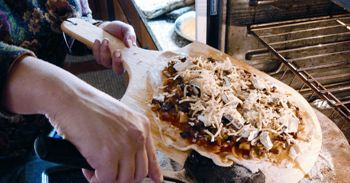 JOHN IVANKO Cooking is the great divide between good eating and bad. |
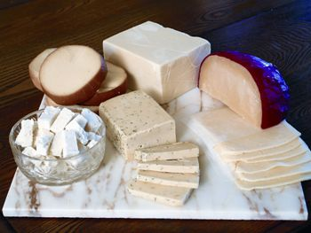 JOHN IVANKO Make your own cheeses for spectacular - and fun! - home-cooked meals. |
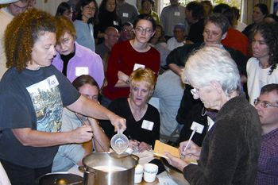 JAMIE ECKLEY Ricki Carroll has taught her craft to thousands of aspiring cheese makers. |
|
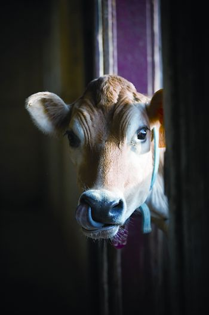 JASON HOUSTON High-quality milk from happy animals makes scrumdidleumptious cheese! |
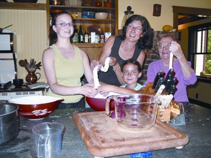 STEVEN HOPP Connecting the generations: Barbara Kingsolver braids fresh mozzarella with her daughters and their grandmother. |
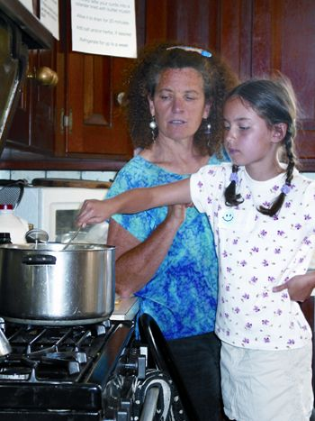 STEVEN HOPP Step 5: Knead hot curds. |
|
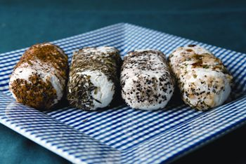 JENNIFER MAY With homemade cheese, you have control over what goes into, and what stays out, of your cheeses. |
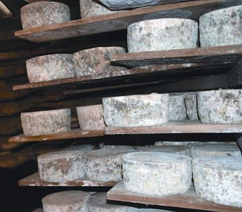 ROBIN ASBELL “We’re connecting across geography and time with everybody who ever looked at a full-moon pot of white milk and imagined cheese.” |
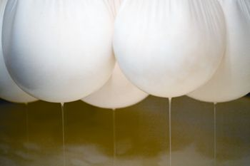 JASON HOUSTON Heat milk, add culture, let sit, hang in a cheesecloth bag to drain. That’s about all it takes to make many kinds of cheese. |
|
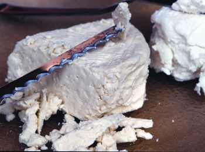 RICK WETHERBEE Even if you are lactose-intolerant, you may be able to enjoy homemade soft cheeses. |
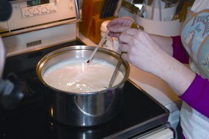 MATTHEW T. STALLBAUMER |
 MATTHEW T. STALLBAUMER Step 2: Add rennet to curdle the milk. |
|
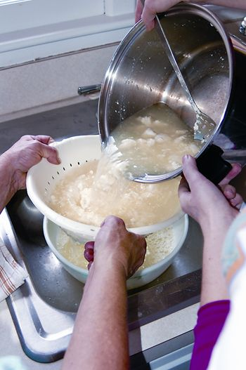 MATTHEW T. STALLBAUMER Step 3: Drain off whey. |
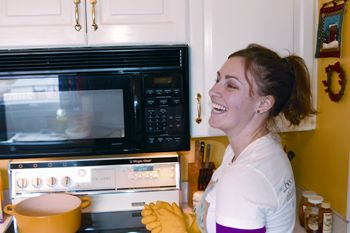 MATTHEW T. STALLBAUMER Step 4: Laugh at how easy cheese making can be! |
 MATTHEW T. STALLBAUMER |
 MATTHEW T. STALLBAUMER |
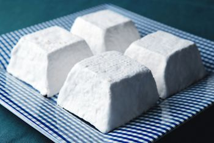 JENNIFER MAY Freshly made goat’s-milk chevre is an exceptional treat, and sooooooooo easy to make! |
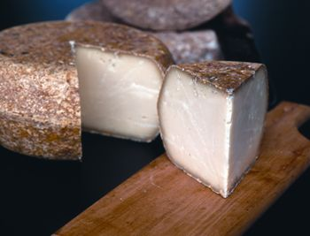 RICK WETHERBEE A quality diet is not an elitist option for the do-it-yourselfer. You can even make your favorite hard, aged cheeses at home. |